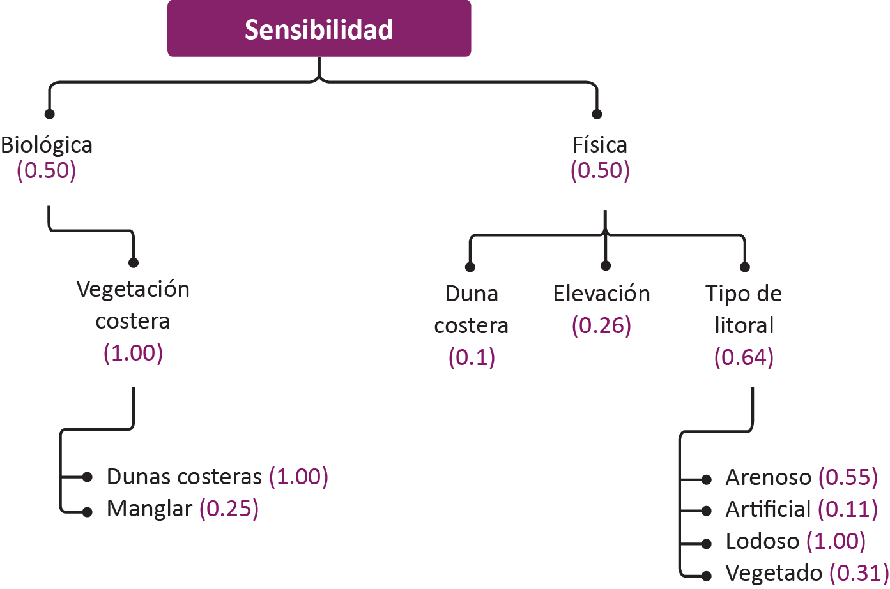
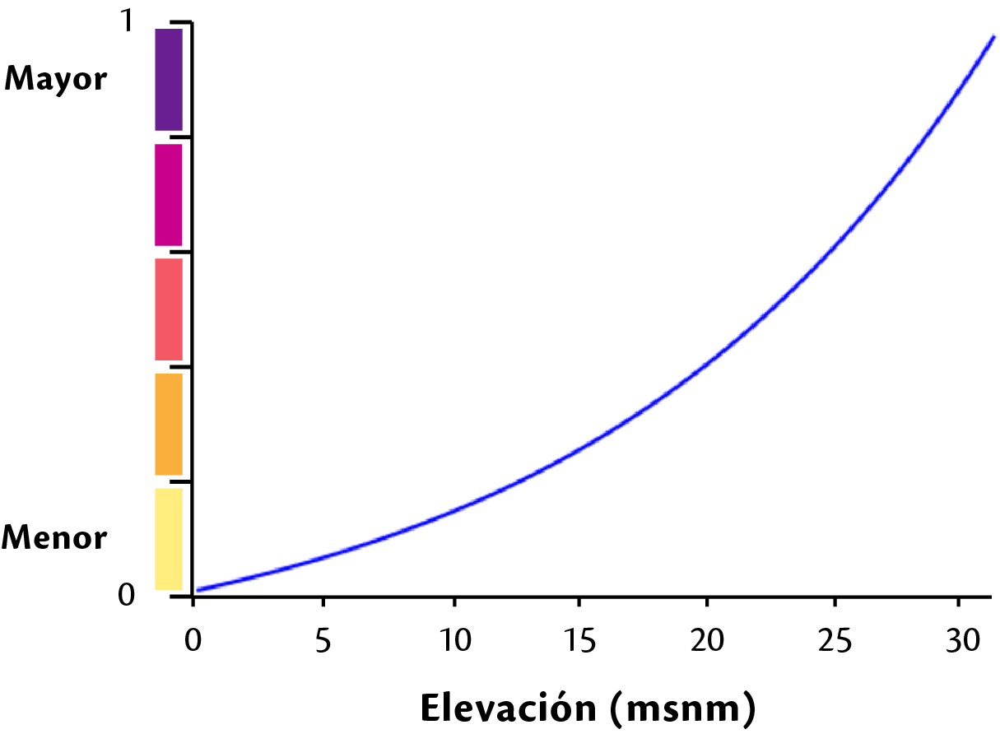

Criterio de sensiblidad¶
Insumos¶
Biológica¶
Vegetación acuatíca¶
Sensibilidad - biológica
Peso local:0.34
insumo: ifv_v_acuatica_yuc.tif
Definición: Distancia entre los pastos y la línea de costa
mínimo: 0.0 máximo:3000tipo de función: Continua - Logística
Nota
Esta capa fue procesada en grass 7 ya que no se pudo procesar en la plataforma
archivo json: fv_sens_bio_v_acuatica.json
centro:1500, min:0, max:3000, saturacion: 3, k:0.0834999999999999
Resultado:: SIG/desarrollo/sig_papiit/entregables/sensibilidad/biologica/v_acuatica_yuc/fv_v_acuatica_yuc.tif
Nombre de la capa: fv_v_acuatica_yuc
issue: vegetacion_acuatica
Vegetación costera¶
Sensibilidad - Biológica
peso local : 0.66
Definición: Esta capa representa la integración de las capas de presencia de vegetación de duna constera con la capa de manglar.
Integración:
fv_v_costera_presencia = ifv_v_dunas_presencia(1.0) + ifv_v_manglar_presencia(0.25)
Insumos¶
Manglar
Sensibilidad - Biológica - Vegetación costera
peso local: 1.0
Insumo: ifv_manglar_presencia.tif
Definición: Esta capa representa la presencia de manglar en la zona de estudio
Tipo de función: Discreta
Duna costera
Sensibilidad - Biológica - Vegetación costera
peso local:: 0.25
Insumo: ifv_dunas_presencia.tif
Definición: Esta capa representa la presencia de vegetacion de dunas costeras en la zona de estudio
Tipo de función: Discreta
Resultado:: SIG/desarrollo/sig_papiit/entregables/sensibilidad/biologica/v_costera_yuc/fv_v_costera_presencia.tif
Nombre de la capa: fv_v_costera_presencia.tif
issue: Vegetación costera
Física¶
Ancho de playa¶
Sensibilidad - Física
Peso local: 0.33
Insumo:: fv_ancho_playa_yuc.tif
Definición: Esta capa representa el ancho de playa en la costa. El insumo ocupado para la generación de esta capa corresponde a información dle POETY, se ocupo una función logística para representar esta capa
Tipo de función: Continua - Logística
min:0 max:54 center:23 k:0.1325 saturación:5Resultado:
Nombre de la capa:
issue
Dunas costeras¶
Sensibilidad - Física
Peso local:0.56
Insumo: fv_duna_yuc.tif
Definición: Esta capa representa la presencia de dunas costeras en la costa, El insumo ocupado para la generación de esta capa corresponde a información del POETY combinado con el ancho de playa.
Tipo de función: Discreta
Resultado:
Nombre de la capa:
issue
Elevación¶
Sensibilidad - Física
Peso local::0.04
Insumo: fv_elevacion.tif
Definición: El insumo para la generación de esta capa proviene del Continuo de Elevaciones Mexicano (CEM) de INEGI, a la cual se le aplico una funcion de valor concava creciente
Tipo de función: continua - Concava creciente
arhivo json:

min:0 max: 31 gama: 0.01975 saturacion: 13Resultado:
Nombre de la capa:
issue
Tipo de litoral¶
Sensibilidad - Física
Peso local: 0.07
Insumo: fv_tipo_litoral_yuc.tif
Definición: Esta capa representa la presencia de diferentes tipos de litoral, estos fueron clasificados conforme a la siguiente tabla, el insumo ocupado es la capa de uso de suelo y vegetación serie VI de INEGI
Tipo de función: Discreta
Tipo de Vegetación Tipo de litoral Área desprovista de vegetación Arenoso Sin vegetación aparente Arenoso vegetación dunas costeras Arenoso Acuícola Artificial Urbano construido Artificial Agua Lodoso Peten Lodoso Vegetación halofila, hidrofila Lodoso Agricultura de riego anual Vegetado Agricultura de riego permanente Vegetado Manglar Vegetado Palmar, pastizal,manglar, tular Vegetado Vegetación secundaria (5 clases) Vegetado Quendando de esta forma los pesos asignados para cada categoría.
Categoria Descripción Peso 1 Arenoso 0.55 2 Artificial 0.11 3 Lodoso 1.00 4 Vegetado 0.31 Resultado:
Nombre de la capa:
issue